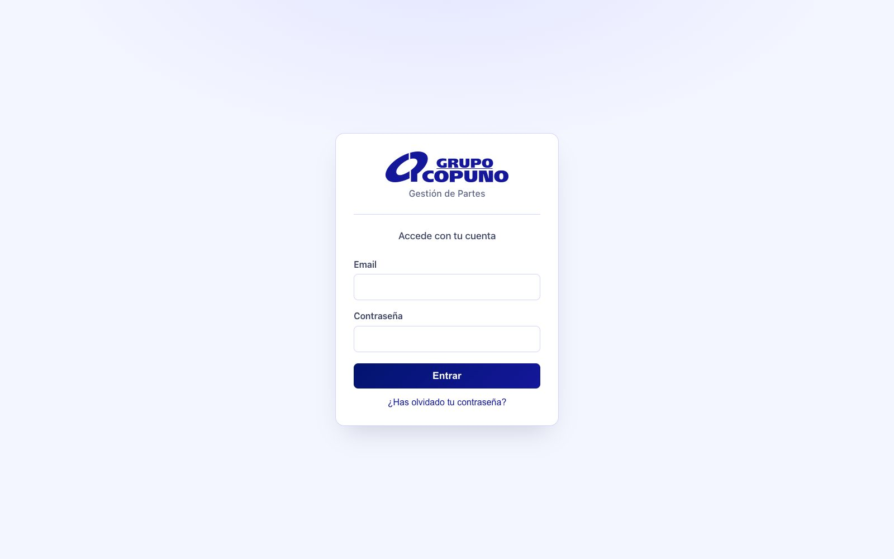
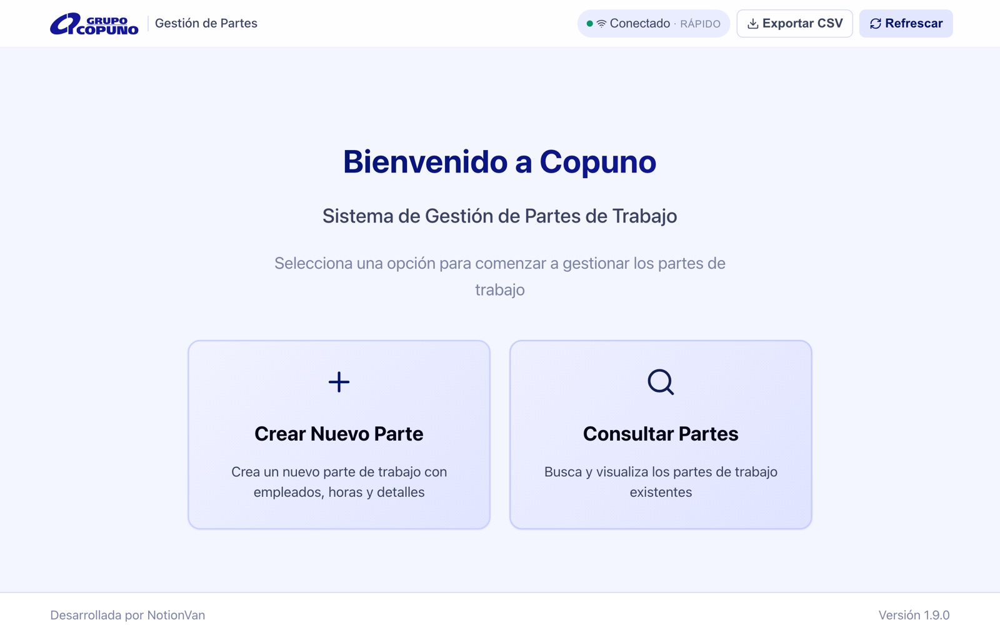
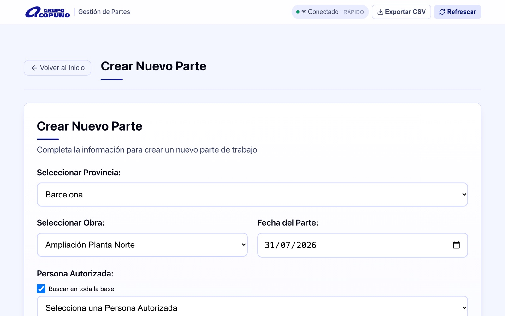
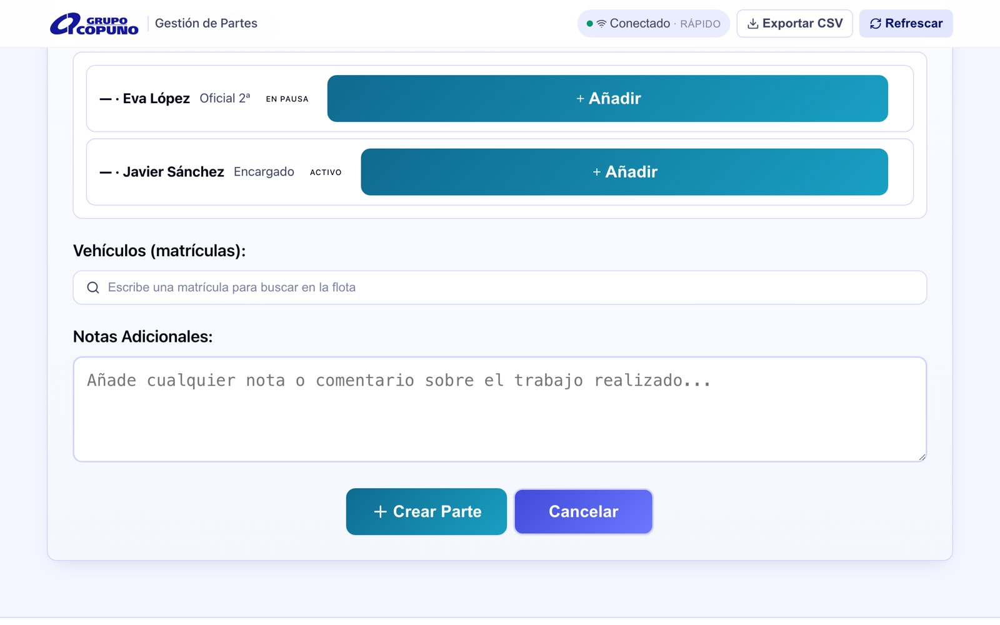
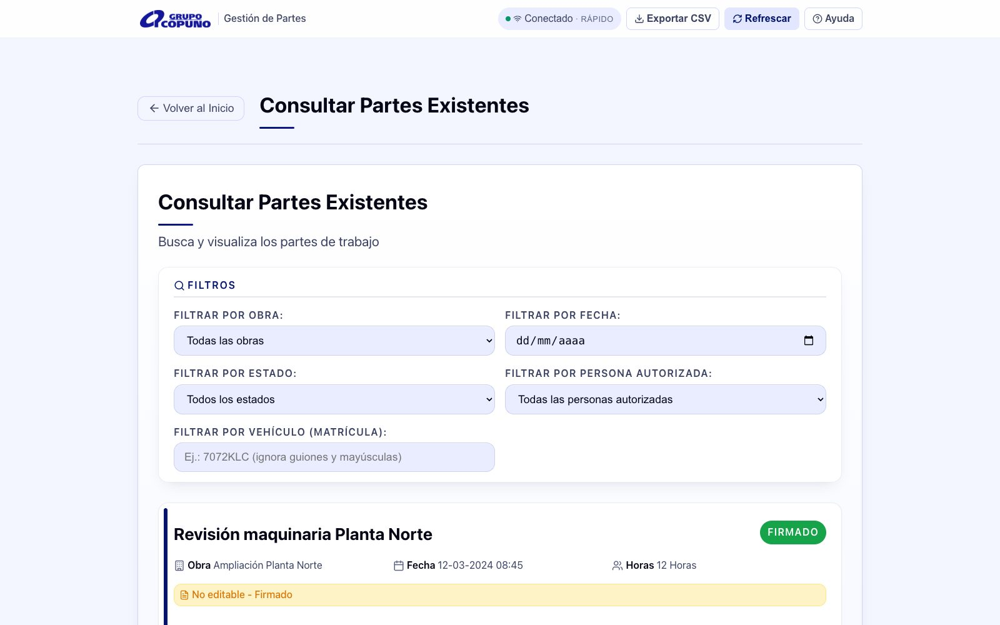
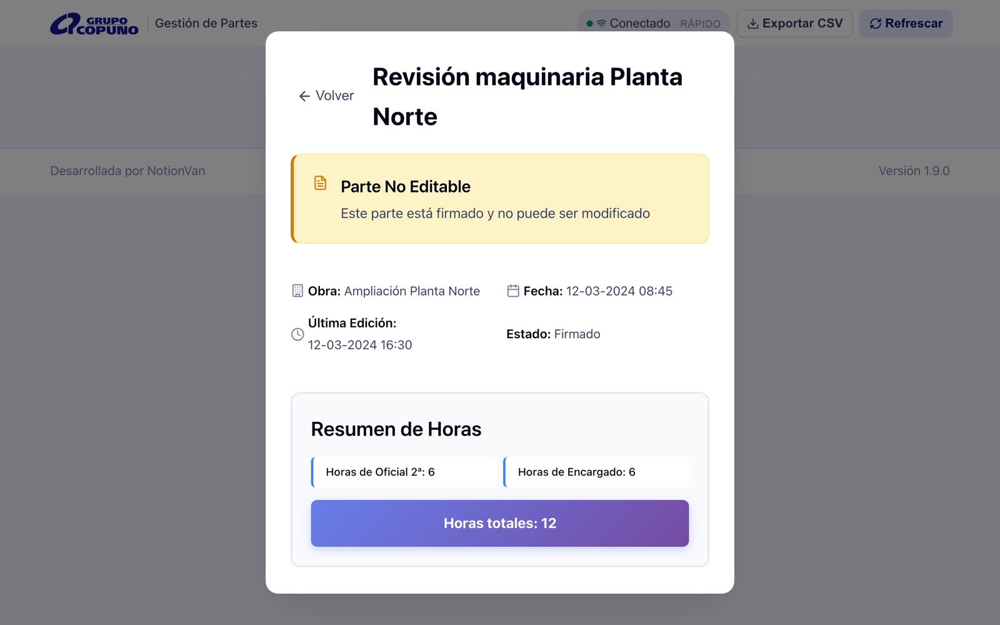
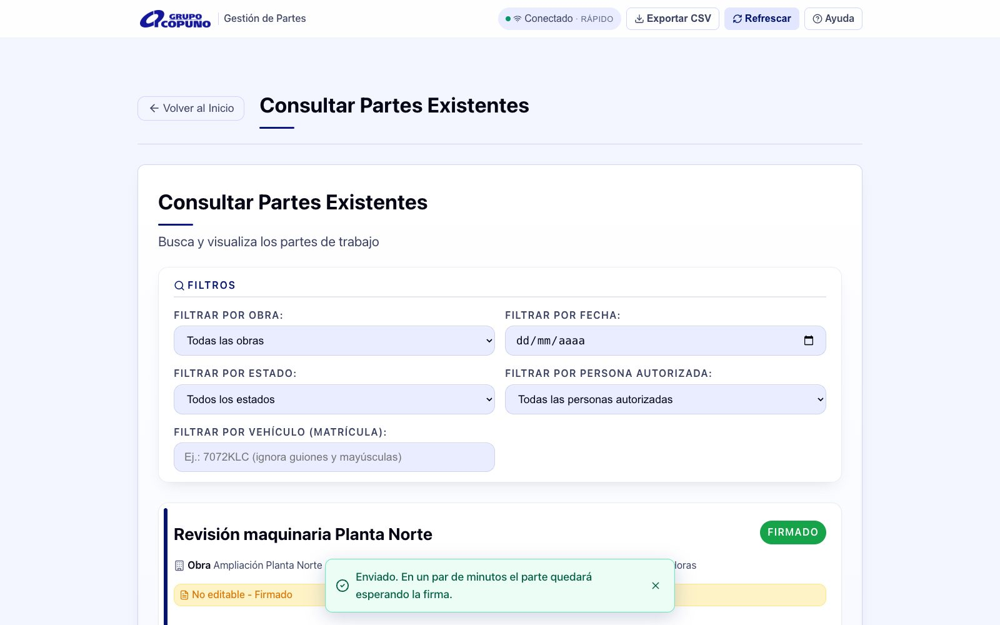
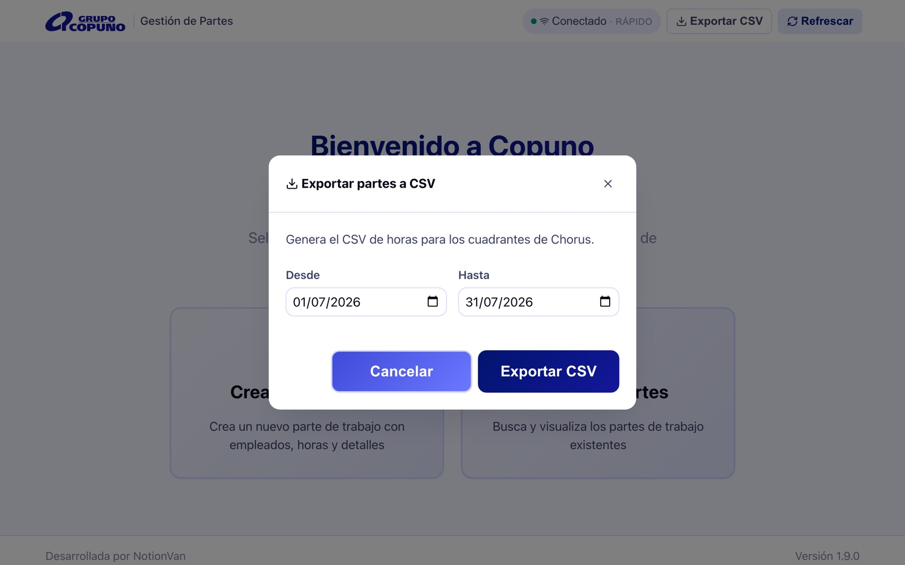
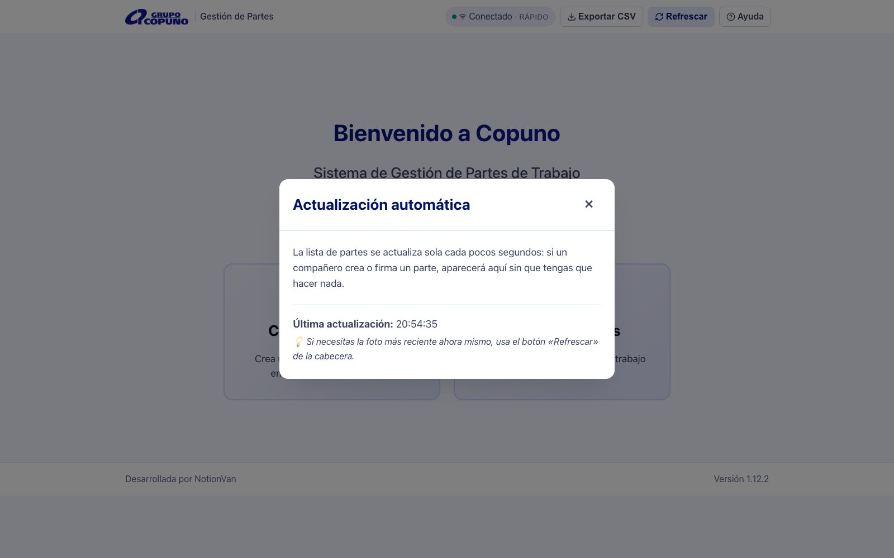
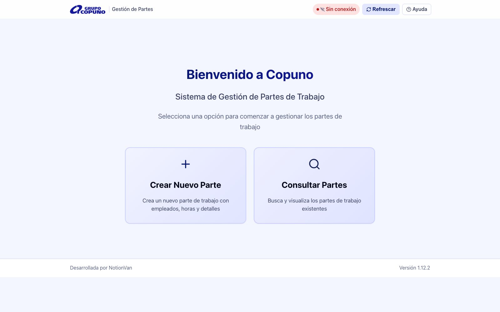

Gestión de Partes de Trabajo
Manual de usuario
Documento de consulta para los usuarios de la aplicación. Recoge el funcionamiento de la versión 1.13.4; cuando la aplicación cambie, el manual se actualiza y se vuelve a distribuir.
1 · Qué es esta aplicación
Gestión de Partes es la aplicación interna de Grupo Copuno para crear, firmar y archivar los partes de trabajo diarios de las obras. Un parte recoge, para una obra y una fecha, qué empleados trabajaron, cuántas horas hizo cada uno, qué vehículos se usaron y cualquier nota relevante.
La usan dos perfiles:
- Jefes de obra — crean los partes desde el móvil o la tablet a pie de obra y firman digitalmente el PDF resultante.
- Oficina — consulta los partes, comprueba estados, exporta las horas para los cuadrantes y detecta partes sin firmar.
Detrás de la pantalla, los datos quedan registrados en el sistema de gestión de Copuno y el PDF se genera, se firma y se archiva de forma automática. Nada de eso requiere acción del usuario: la app lo orquesta todo desde los botones que se describen en este manual.
2 · Acceso y cuenta
La aplicación requiere iniciar sesión con email y contraseña. No hay registro público ni autoservicio: las cuentas las crea el administrador del sistema.

Primer acceso
¿Contraseña olvidada?
En la pantalla de acceso, pulsa «¿Has olvidado tu contraseña?», escribe tu email y recibirás un enlace para fijar una nueva. Este es el mecanismo normal de rescate: no hace falta avisar al administrador.
Menú de cuenta
Con la sesión iniciada, en la esquina superior derecha aparece el menú de tu cuenta, desde el que puedes cambiar la contraseña o cerrar sesión.
3 · Pantalla de inicio

La barra superior acompaña en toda la aplicación:
- Logo Copuno — vuelve al inicio desde cualquier pantalla.
- Indicador de conexión — «Conectado» y el modo de sincronización actual (ver sección 10).
- Exportar CSV — genera el fichero de horas para los cuadrantes de Chorus (sección 9).
- Refrescar — fuerza una recarga inmediata de los datos.
4 · Crear un parte
Desde el inicio, pulsa «Crear Nuevo Parte» y completa el formulario de arriba abajo:


Al guardar, el parte se crea en estado Borrador: sigue siendo editable hasta que se envíen los datos.
5 · Consultar y filtrar partes

La pantalla «Consultar Partes» lista todos los partes, del más reciente al más antiguo. Los filtros se pueden combinar:
- Obra, fecha, estado y persona autorizada.
- Vehículo (matrícula) — encuentra los partes donde participó un vehículo; ignora mayúsculas, guiones y espacios (
7072-KLCy7072klcdan lo mismo). - El botón «Limpiar» aparece cuando hay filtros activos y los restablece de un clic.
Cada tarjeta muestra la obra, la fecha, las horas totales, las matrículas (si las hay) y su estado, y ofrece solo las acciones que ese estado permite:
| Estado | Qué significa | Acciones disponibles |
|---|---|---|
| Borrador | Recién creado o devuelto a edición. Aún no ha salido de la app. | Ver detalles · Editar · Enviar datos |
| Procesando | Los datos están viajando hacia la generación del PDF. Estado transitorio. | Ver detalles |
| Datos Enviados | El PDF se está generando o ya espera la firma del jefe de obra. | Ver detalles · Rectificar |
| Firmado | El jefe de obra firmó. El PDF firmado queda archivado. No editable. | Ver detalles · Rectificar |
Los partes rectificativos y los rectificados se distinguen con insignias Rectificativo / Rectificado en la tarjeta.
6 · Detalles y estados del parte

«Ver Detalles» abre una ficha con la cabecera del parte, el estado, la última edición, el resumen de horas por categoría (Oficial 1ª, Oficial 2ª, Capataz, Encargado…) y el desglose por empleado.
Mientras la ficha está abierta, la app vigila el estado del parte automáticamente: si se genera el PDF o el jefe de obra firma mientras miras, el cambio aparece sin refrescar (ver sección 10).
7 · Enviar datos y firma
Cuando el parte está completo, el botón «Enviar Datos» pone en marcha el circuito de firma:

8 · Rectificar un parte
Si un parte Firmado o en Datos Enviados contiene un error (horas mal contadas, empleado que faltaba, matrícula equivocada…), pulsa «Rectificar» en su tarjeta:
El original no se modifica ni se borra — conserva su PDF firmado. Un parte solo puede rectificarse una vez (el botón desaparece si ya tiene rectificativo), y a efectos de cómputo de horas (por ejemplo, en la exportación a Chorus) manda el rectificativo: el original rectificado se excluye automáticamente.
9 · Exportar CSV para los cuadrantes (Chorus)

El botón «Exportar CSV» de la barra superior genera el fichero de horas que consume la macro de cuadrantes de Chorus. Uso típico de oficina, una vez al mes:
Partes_MM-AAAA.csv, listo para Excel.Reglas que la exportación aplica sola:
- Una fila por obra + trabajador + día, con las horas agregadas.
- Excluye los partes rectificados (cuenta el rectificativo, no el original) y las obras de prueba.
- Las líneas con datos incompletos (por ejemplo, un trabajador sin ID) no se pierden en silencio: se listan como incidencias para revisarlas.
- Antes de descargar, avisa si en el rango hay partes sin firmar.
10 · Sincronización y resolución de problemas
La app se actualiza sola
No hace falta refrescar: la lista de partes se actualiza sola cada pocos segundos. Si un compañero crea, edita o firma un parte, aparecerá en tu pantalla en menos de medio minuto. Mientras tienes una edición abierta, la actualización automática se pausa para no tocar lo que estás escribiendo, y se reanuda al cerrar. Pulsando el indicador «Conectado» de la barra superior verás la hora de la última actualización. El botón «Refrescar» fuerza la recarga inmediata si no quieres esperar.

Aviso de nueva versión
Cuando se publica una versión nueva de la app, aparece un banner de actualización. Púlsalo (o recarga la página) para cargar la última versión.

Problemas frecuentes
| Síntoma | Qué hacer |
|---|---|
| «No puedo editar un parte» | Mira su estado: Procesando, Datos Enviados y Firmado bloquean la edición. Usa Rectificar si ya está firmado o enviado. |
| «El parte lleva mucho en Procesando» | El envío no llegó a completarse. Avisa a soporte — no intentes recrearlo, el bloqueo evita duplicados. |
| «Falta el PDF firmado» | La firma y la subida del documento son automáticas pero externas a la app; si tras firmar no aparece, es una incidencia del circuito de firma: avisa a soporte. |
| «El enlace para restablecer la contraseña no funciona» | Caducó o ya se usó. Pide otro desde «¿Has olvidado tu contraseña?». |
| «La app me pide entrar otra vez» | La sesión caducó o se cerró en otro dispositivo. Entra de nuevo; si no recuerdas la contraseña, restablécela. |
Gestión de Partes v1.13.4 · Manual de usuario · 18 de agosto de 2026
NotionVan para Grupo Copuno